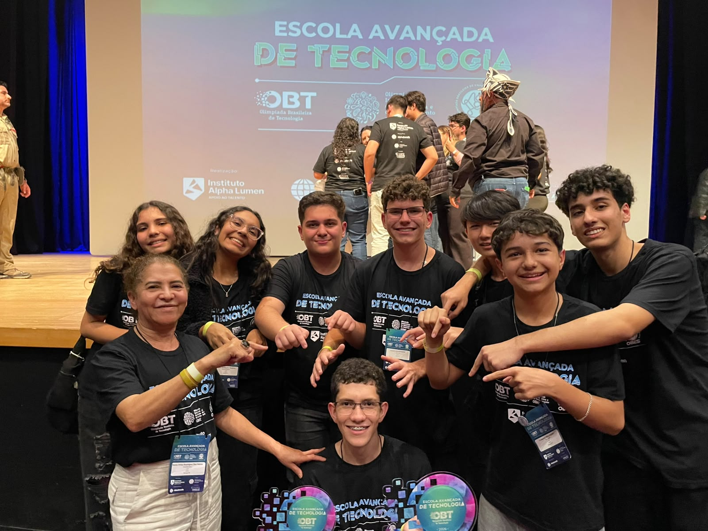

Por: Thiago Enzo Fujiki

Por: Thiago Enzo Fujiki
Sua trajetória começou em 2024, e por ser uma olimpiada diferente, ele junto a sua equipe estudou sobre ela para que soubessem os principais critérios, como a avaliação funcionava e o que deveria ser enviado para tentar ganhar algo lá.
Assim que eles tiveram noção sobre a olimpiada, eles começaram a desenvolver o aplicativo, onde o Jõao ficou responsável sobre a programação do app, que foi chamado de Ciência Guará, em homenagem a um animal da fauna brasileira, o app foi apresentado como uma ferramenta auxiliar aos professores, para facilitar e promover um ensino mais divetido e lúdico aos alunos sobre a matéria de ciências nos 6° e 7° anos do colégio.
O aplicativo passou para a OBT em 2024, e a equipe conquistou uma medalha de ouro, com isso Jõao e sua equipe de 6 integrantes decidiram tentar no próximo ano, assim chegamos em 2025, o app foi o mesmo porém com algumas melhorias, e infelizmente essas melhorias não nos proporcionou uma 2° medalha, mas conseguimos viajar para o evento com honra ao mérito, após esse ano, percebemos que o nível dos aplicativos da olipiada haviam aumentado muito, logo resolvemos focar e criar um novo app para competir em 2026, chamado de Conectaltas, baseado em um hub digital para alunos de altas habilidades e superdotação, ele disponibilizava diversas funções programadas especialmente pelo Jõao, contando com o auxílio do seu companheiro Leonardo. Com este aplicativo nós passamos conquistando uma medalha de bronze (3°), porém no evento tem alguns prêmios divididos por áreas, escolas e categorias criadas por eles, que os ganhadores são decididos durante a olimpiada, para a surpresa da equipe, eles conseguiram conquistar mais 2 prêmios, o de 2° lugar da categoria de escolas públicas e um destaque de gamificação, tornando a viagem uma experiência única para os alunos!
Contudo, podemos observar essa grande oportunidade apresentada a estes alunos, que buscaram aproveita-lá, atualmente o projeto não possui um fim definido pela equipe, porém no próximo ano é esperado que a equipe participe novamente!
Por: Thiago Enzo Fujiki

Por: Thiago Enzo Fujiki